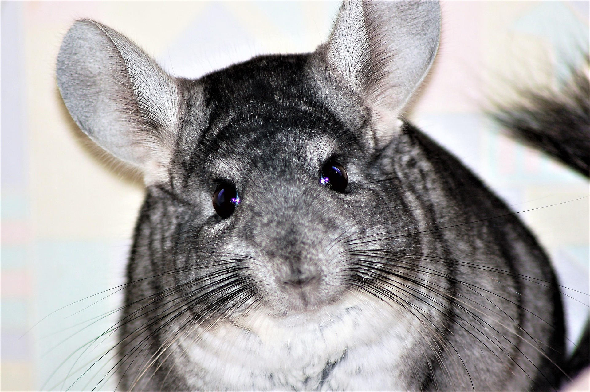
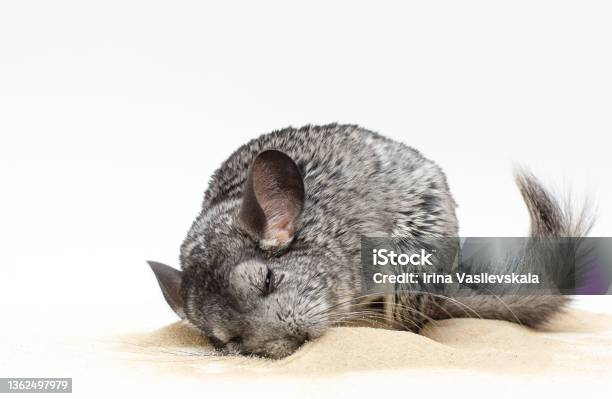

Diet & Hydration
Chinchillas thrive on unlimited timothy hay, quality pellets, and fresh filtered water.
Pro-Tip: Avoid sugary fruits and nuts—their digestive systems are very sensitive!

Your guide to the world's softest nocturnal rodents.
Hover over each card to reveal a care pro-tip.
Chinchillas thrive on unlimited timothy hay, quality pellets, and fresh filtered water.
Pro-Tip: Avoid sugary fruits and nuts—their digestive systems are very sensitive!
Because of their ultra-dense fur, chinchillas overheat easily and need air-conditioned rooms.
Pro-Tip: Keep the room below 70°F (21°C) and place a chilled marble slab in their cage.
Their teeth grow continuously throughout their lives, so safe chew toys are a must.
Pro-Tip: Apple wood sticks and pumice stones are safe, chinchilla-approved favorites.
Never bathe a chinchilla in water! Their fur is so thick it cannot dry properly.

Keep track of your daily tasks below.
Click the text box to add a new reminder.